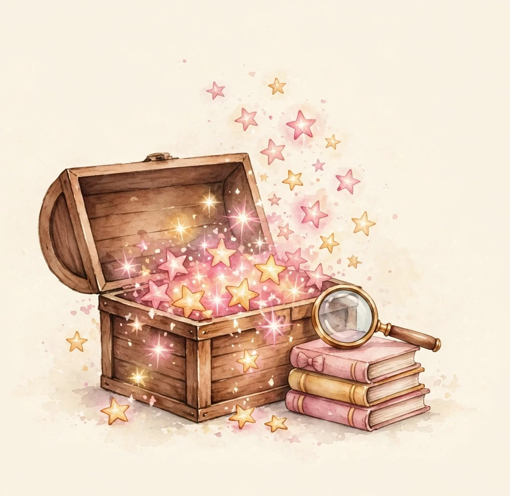
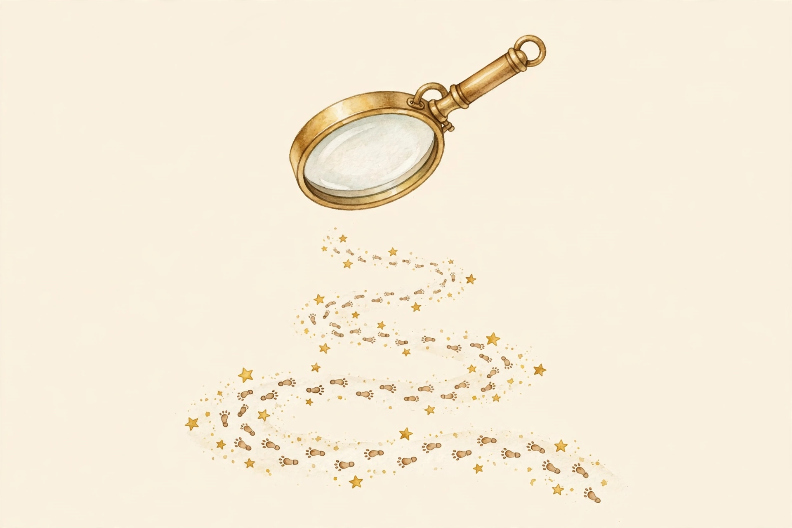

Audrey，你好呀！
这几天，Catherine 老师把你这一年多的考试成绩，从头到尾仔仔细细看了一遍。你猜我发现了什么？
发现了一个关于你的秘密：你其实比你自己以为的，要厉害得多。
这封信，就是想把这个秘密讲给你听。然后，我们一起看看一张“宝箱地图”——看看还有哪些宝箱，等着你慢慢去打开。不着急，一点都不着急。就像芙丽莲一样，我们慢慢走，沿路收集小小的魔法，也能走得很远很远。
你的三个超能力
超能力 1：你像星之卡比一样，看过的书都会变成你的本事
卡比最厉害的地方，是把东西吸进去，就能变成自己的能力。你其实也一样！
你喜欢看漫画、小说、工具书，鬼灭之刃、火影忍者、哆啦A梦、葬送的芙丽莲，什么都看。你看过的每一个故事、每一页书，都悄悄变成了你的国語能力。所以你的国語成绩在班里常常排在前面，有一个月还拿过全班第一名呢。
所以你要继续开开心心地看书。这不只是玩，这就是你的超能力在升级。
超能力 2：你说你不喜欢计算，其实你算得可准了
我知道你不太喜欢做计算题。可是我把试卷翻出来一看——最近三次大考试，你的计算题几乎全对！
炭治郎的呼吸法，也是每天一点点练出来的基本功。计算对你来说，就已经是练得很稳的呼吸法了。你不是“不会算”，你只是“不太爱算”，这两件事差得远啦。以后遇到计算题，就想：“哦，是我的拿手好戏来了。”慢慢算、算仔细，你完全没问题。
超能力 3：你的脑子里，装着一个大大的图鉴
花怎么开，虫子怎么变，星星在哪里——这些图鉴里的知识，你本来就感兴趣。
你的理科大考试成绩，是三科里最稳的一个。你的脑子里已经装了一个大图鉴，只是有时候考试前没来得及把它翻出来而已。这个我们有办法，特别简单，你看后面的任务二。
宝箱地图：分数都藏在哪里

每次考试的题目，就像三种宝箱：
A 宝箱（简单的题）：你已经打开了差不多全部！只剩下一个小宝箱还没开——是一种叫“连接词”的小题。找个时间花十分钟，我们就能打开它。
B 宝箱（中等的题）：这个你打开了大概一半。另一半宝物还安安静静躺在里面，而那些题，你其实大多都会做，只是考试的时候没有稳稳拿下来。这就像在 Minecraft 里挖矿——钻石就在前面几层，不用着急，一镐一镐慢慢挖，总会挖到的。
※ 我们要打开的，就是它。
C 宝箱（很难的题）：这个宝箱在地图最深处，上着锁，就像游戏里等级还不够进的区域。Catherine 老师正式通知你：现在完全不用管它！考试的时候遇到难题，大大方方跳过去，一点都不丢人，还能省下时间去检查会做的题。地图先标在这里，等你上五年级、再长大一点，我们再回来开它。
我们的计划特别简单：接下来几个月，我们就慢慢打开 B 宝箱。不用学新东西，只是把“你本来就会的”，稳稳地拿回来。
三个小任务
像游戏任务一样，慢慢做就好。

任务一：当小侦探（算数）
算数里有一类题，表面上是算数，其实是侦探游戏——找规律。数字排着队，里面藏着一个小秘密，就像游戏里的隐藏机关，等你发现它。
做这类题的时候，先不要动笔算，先看一会儿，在心里说：“哦，我知道它们的秘密了！”然后再写。每个星期玩两次，每次一点点就好。侦探破案不用快，找对最重要。
任务二：考试前翻翻图鉴（理科）
你还记得哆啦A梦的记忆面包吗？把面包往书上一印，吃下去就记住了。
我们不用真的吃面包，但有差不多的小魔法：理科考试之前两天，花十五分钟，把要考的那一单元当图鉴书翻一翻——看看图片，看看哪里有意思，不用背，看眼熟就行。
你的记性其实很好，这样翻一翻，考试的时候就会想起来：“啊，这张图我见过！”那些分，就自己跑回来了。
任务三：收集错字材料（国語）
以前写错过的汉字，就像 Minecraft 里的材料一样，散落在你的本子里。我们每天花五分钟，把它们一个个捡回来、写对两次，就算收集成功啦。材料攒多了，就能合成厉害的装备——考试的时候，你的字写对了，分就稳稳的。
Catherine 老师会帮你记着，你已经收集了哪些“材料”。慢慢攒，不着急。
我们的路线图
从现在到二月，你升五年级之前，我们要路过三个站，像 Roblox 里一关一关往前走一样。每一关都不用争第一，过关就是胜利：
最近的一场考试，平常心就好。记住：会的稳稳写，不会的跳过去。
把 B 宝箱再多打开一点点。
四年级的最后一场考试，给自己一个漂漂亮亮的收尾。
五年级的新教室，我们到啦。
有一个小数字想告诉你：现在你大概站在队伍的正中间，我们的目标，是慢慢走到前面一点点的位置。不用跑，不用跟别人比，就按你自己的步子走。走到，是赚到；差一点，也没关系，我们下一站继续。Catherine 老师会一直帮你看地图的。
Catherine 老师想对你说的话
第一，考试没考好，不用难过。你每次大大咧咧、考完就翻篇，这个本事特别珍贵。心里不装着包袱的人，才能一直开开心心往前走。成绩的账，老师帮你算；你只管好好学、好好玩、好好看书、好好玩游戏。
第二，怕难题，一点都不奇怪。所有的小朋友都怕。会做的题稳稳拿下，就是很了不起的本事了。难题是给以后的你准备的，不着急。
第三，你不用变成别人。芙丽莲活了一千多年，从来不跟别人比快，她就按自己的节奏，收集小小的魔法，慢慢地走——结果走得比谁都远。你喜欢看书、喜欢自然、心里装着很多有趣的事，这样的 Audrey，就是最棒的 Audrey。我们要做的，只是把你已经有的本事，一点点亮出来而已。
慢慢来，我们一起走。